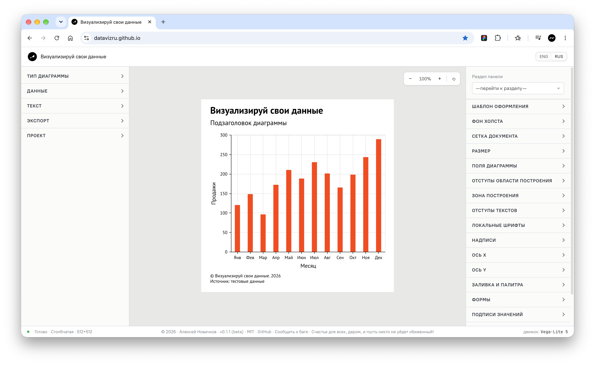
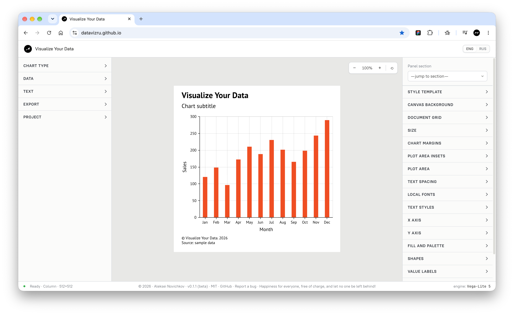

100%
Визуализируй свои данные
Данные → диаграмма → история
Ваши данные. Ваше оформление.
Создавайте диаграммы для статей, отчётов и презентаций прямо в браузере. Загрузите CSV, настройте оформление и сохраните результат в PNG или SVG.
Редактор работает только на компьютере
Откройте этот сайт на ноутбуке или настольном компьютере, чтобы создавать и редактировать диаграммы.


От таблицы к диаграмме
Столбцы, линии, области, точки и тепловые карты — выбирайте подходящий способ показать данные.
Оформление под вашу задачу
Настраивайте шрифты, цвета, оси, подписи и размеры. Сохраняйте проекты, чтобы продолжить позже.
Бесплатный проект с открытым исходным кодом · MIT